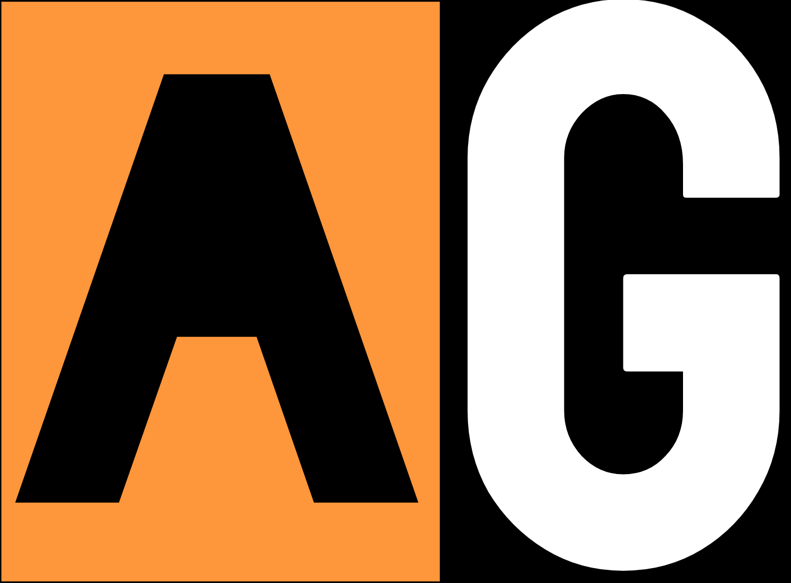

Teren
tražim…
☀
👤
–
–
Verzija sučelja
🖥 Računalo
📱 Mobitel
Odjava
Blizu mene
Cijeli popis
Karta
Filteri
1 tjedan
4 tjedna
3 mjeseca
Sve
100 m
300 m
1 km
5 km
Zadano
Najbliže
Najnovije
Adresa A–Ž
Po ocjeni
Za provjeru
Svi statusi
Potvrđene
Odbačene
Županije
Tip zgrade
Katovi
Ortofoto
Poništi sve filtere
Odabir
×
Očisti
Gotovo
Učitavam…
Dohvaćam popis zgrada i tvoju lokaciju.